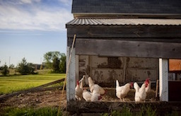
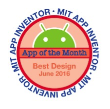

Going Green
This website is for people who want to start some green changes, but are unsure where to begin. They can explore various possibilities, get a better idea of what to expect, and decide if these changes are worth doing without having to check various sources of information.
The initial work started in 2016 as an IT degree project. There was no coding involved as the focus was the design. After learning more about permaculture, frontend development and UX design, I decided to explore this further in 2018.
This is ongoing. I'm a team of one ;-)

Design Goals
- ease of use even for users with low digital skills
- give a green feel visual, but still accommodate colour-blind users
- choice of French or English - more languages later (new 2018 goal)
- responsive website (new goal - was a mobile app initially)
Work done in 2016
- one survey to recruit 6 users and another one to assess their needs
- a wireflow was done, along with use scenarios, and a usability goals list specific to mobiles
- icons and background visuals were created
- a first prototype was made using App Inventor, tested, and a heuristic evaluation was done
- based on the results, the visuals and icons were improved and a second prototype created
- more usability testing was done as well as another heuristic evaluation
I received the Best Design App of the Month in June 2016 for my prototype.
Download the 2016 prototype for Android devices

New work started in 2018
As I am now coding it, I have more control and flexibility on the end result. I have been focussing on the responsiveness and accessibility. Sails is providing an easy way to manage different languages so I added a new design goal around languages. The users are in Europe so having a choice of more European languages would be a plus.
Using Sketch I've created new wireframes for an alternative navigation on mobiles.
More information about the design is available on the website
Download the wireframes:
- About, Cookies, and Design pages
- An alternative navigation
- Grown your own section
- Email the result section
- Error handling and warnings
Next steps
- recruit new users (5 or more) and test the new wireframes
- depending on feedback, refine, improve and prototype
- iterate until I'm satisfied that it's good enough to code the changes
- add more languages
To be continued...